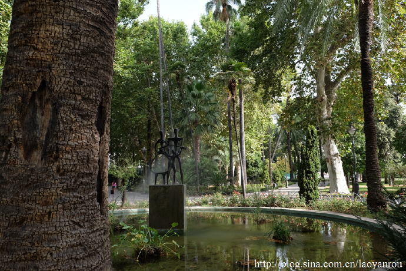
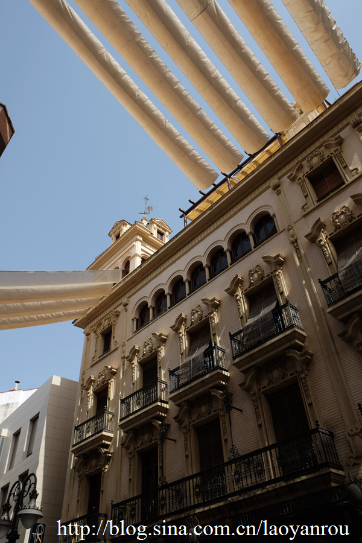

欧游札记之火舞西班牙（Day11马德里——丽池公园）

Day11 马德里——丽池公园
由于就住在高铁站旁边，我们一大早没花费多少时间便从科尔多瓦搭上了高铁前往马德里，沿途所见与我们从巴塞罗那去塞维利亚路上几乎没什么差别，贫瘠荒凉、草木稀疏，到处都是裸露着的褐红色的平地和丘陵，除了零星有些牛羊在牧场中时隐时现以外基本看不到人烟，属于典型的地广人稀的戈壁高原风貌。其实不单是西班牙南部，从谷歌地图上看近一半国土都是如此地貌，有时禁不住疑惑，这样一个老牌资本主义国家靠什么发展经济和养活百姓？以种植为主的农业看来是没戏，难道仅仅依靠畜牧业能维持整个国家经济发展么？估计几百年前西班牙的统治者们也同样纠结于这个问题，但他们找到了一条出路，家里不济就出去闯，自己没有就找别人要，土地贫瘠就殖民别国拿收成，于是乎便开辟了波澜壮阔的大航海时代，成就了一番最老牌日不落殖民帝国的霸业，以至于今天若是懂点西班牙语，去南美洲大多国家旅游基本都可以畅通无阻，可想而知当年西班牙帝国的殖民地范围之广、影响力之大、文化传播之远了。但是“成也萧何败萧何”，现今社会已经无法靠陈旧殖民主义那一套一招鲜吃遍天的时候，西班牙仅靠自身贫瘠的国土支撑的畜牧业已经无法跟上时代发展大流，逐渐沦为了二流资本主义国家，从当年的海上巨无霸变成了跟随着英、德、法等发达资本主义国家的小弟，古今地位的巨大落差不得令人唏嘘不已。
不过话说回来，西班牙高铁等基础设施还是比较靠谱的，没几个小时我们便抵达了马德里，住进了离火车站大概2公里左右的一个普通居民小区的民宿。将行李安顿下来后时间将近傍晚时分，也就只能四周闲逛一下，主要是要摸清超市和菜市场位置 ，顺便熟悉下周围的街道和环境。漫无目的扫街时似乎经过了所谓的丽池公园，绿植挺多，棕榈、梧桐等大树参差交错，绿意盎然，公园中还散落着一些小型喷泉水池和大理石雕塑，有树有水还算看得过去吧，地面也比较干净，甚少落叶和垃圾，相对于我们住的居民区来说卫生要好上不少。作为西班牙首都，马德里的建筑风格更加多元了，既有一些现代主义的设计，也保存有很多文艺复兴风格的教堂、民居，偶尔还能看到一些阿拉伯风格的门窗装饰。时间有限无法细观，匆匆买了点肉，整了几个菜送饭便洗洗睡了。

